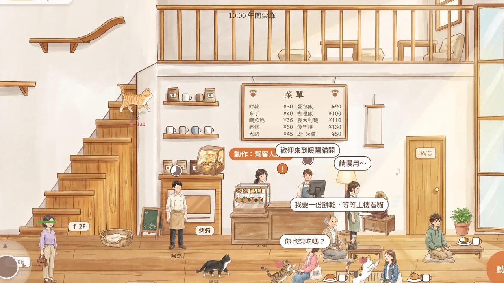
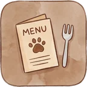
經營咖啡廳招呼客人、點餐、送餐、收桌子。請店員來幫忙，店越來越熱鬧。
一樓是咖啡廳，二樓是貓咪們的閣樓。客人進門、點餐、上樓吸貓，每一天都有不一樣的故事。


經營咖啡廳招呼客人、點餐、送餐、收桌子。請店員來幫忙，店越來越熱鬧。
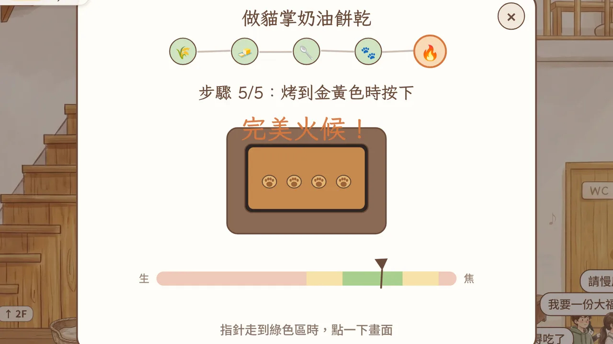
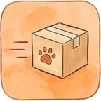
親手做料理甜點和正餐一步一步做：倒麵粉、攪拌、壓出貓掌，再看準火候按下去。
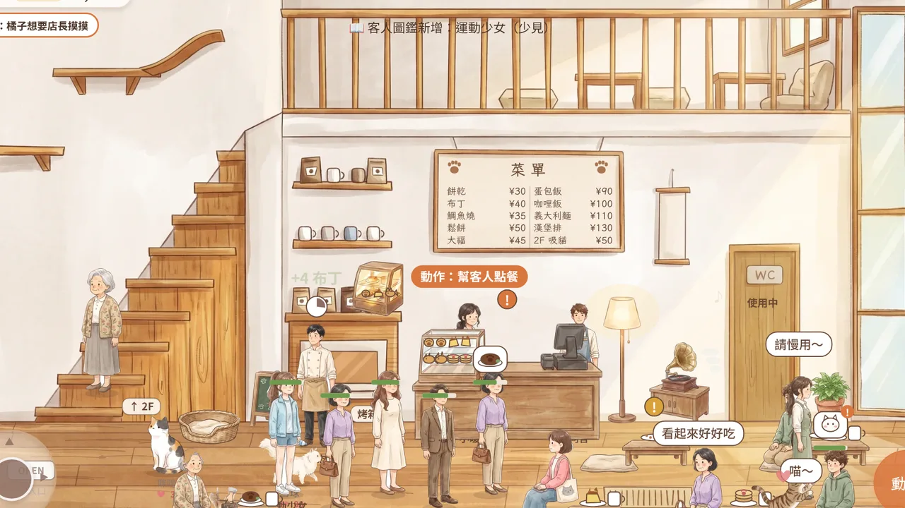
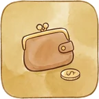
收銀找錢客人付了一張大鈔，要找多少？算對了，客人開心給五星。
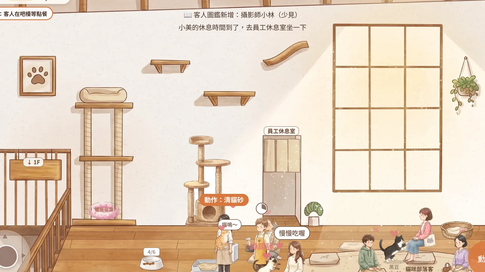
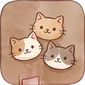
上 2F 吸貓摸摸頭、擊掌、抱抱。每隻貓都有自己的親密度，越熟解鎖越多互動。
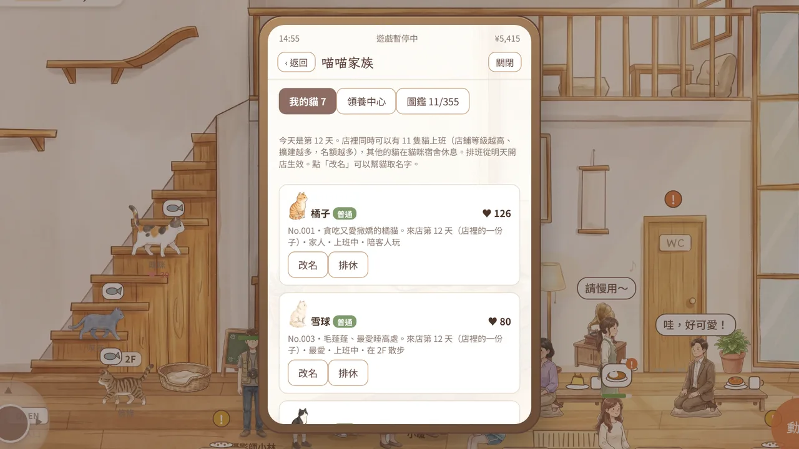
領養新貓咪，收集 300 多種貓和稀有顧客，每天還有任務和客人留言。
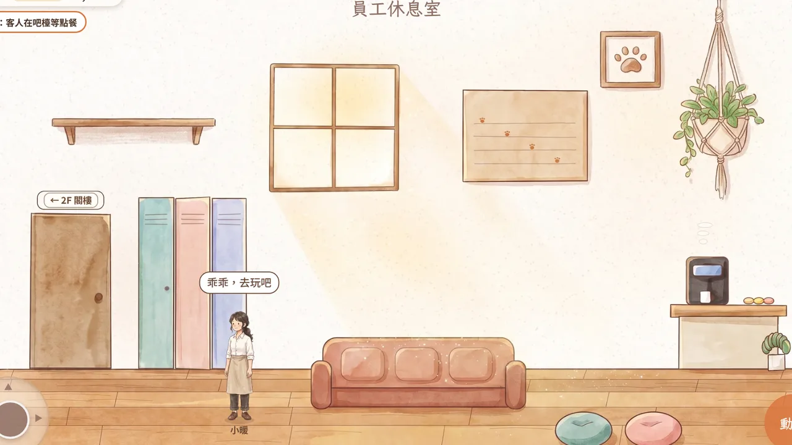
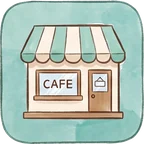
把店做大買傢俱、擴建店面、解鎖新菜單，一路升到 Lv.7。用帳號登入就能在手機和電腦接著玩。
開店第一天就有三隻店貓陪你，升級之後還能領養更多。
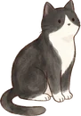
黑豆穿著燕尾服的酷酷賓士貓開店就在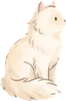
雪球毛蓬蓬、最愛睡高處開店就在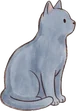
灰灰安靜的藍灰貓，喜歡貓跳台Lv.3 領養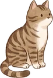
條條虎斑貓，精力旺盛很愛玩Lv.4 領養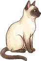
奶茶暹羅貓，會在門口迎接客人Lv.5 領養用瀏覽器打開遊戲就能玩。方向鍵或 WASD 走路，空白鍵 做動作，也可以直接用滑鼠點。